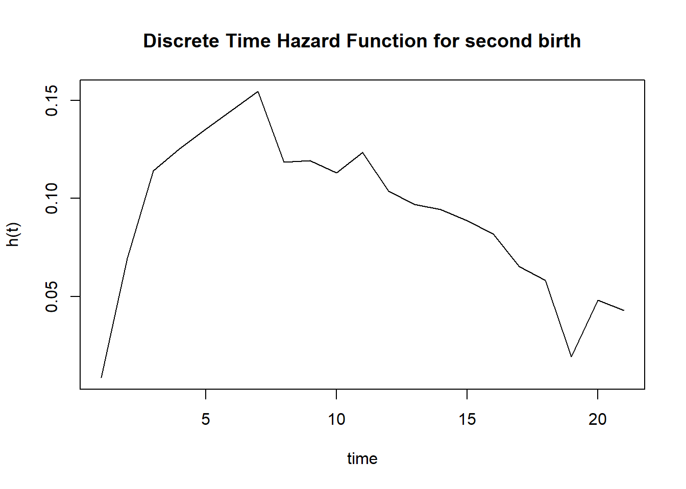
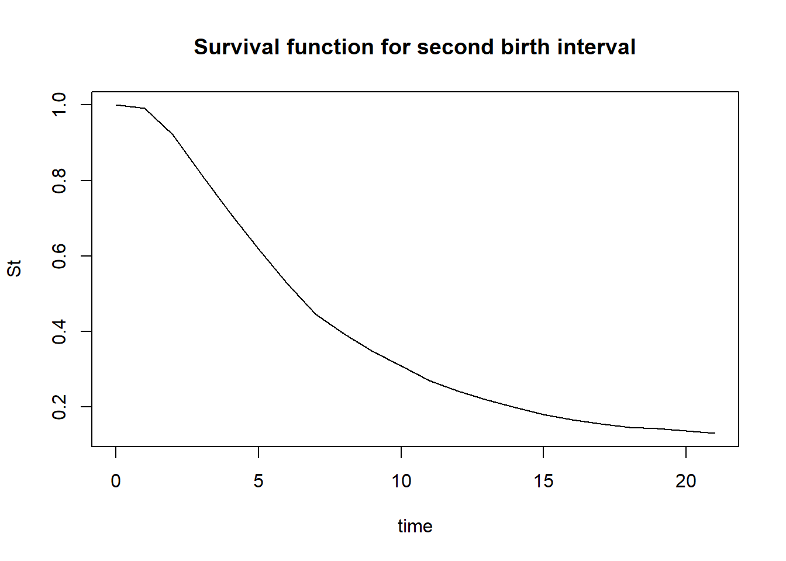
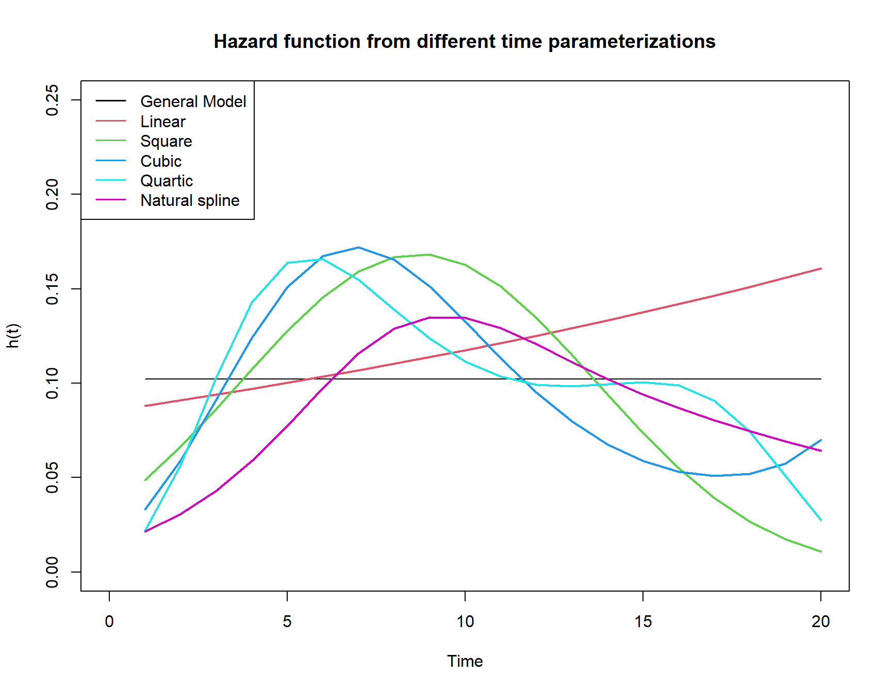

As we saw last week, when we fit the discrete time hazards model to the person-period data, we fit the model:
\[logit(h(t))=\alpha_j+x'\beta\]
Where the \(\alpha_j\)’s represent the logit-hazard for the distinct risk periods, and the \(\beta\)’s represent the effects of covariates on the hazard.
This formulation is called the “general” form because it allows the shape of the hazard function to vary at each time point, as defined by the \(\alpha_j\)’s!
This allows great flexibility in modeling the changing nature of risk
This model specification by definition sets no constraints on the shape of the baseline function because we estimate the hazard at every time point.
This specification is:
Easily interpretable in multiple scales
Informative about the shape of the hazard function
Consistent with estimates from life tables
If we include no predictors, we basically estimate the life table \(q(x)\)
Alternative time specifications
We can specify alternative ways of modeling the hazard function
Instead of having one \(\alpha_j\) for each time point, we may be able to capture the shape of the hazard with fewer parameters.
Because the general model is not parsimonious, the estimates of the baseline hazard can fluctuate dramatically from time to time owing solely to sampling variation
Also, if there are not many failures at particular times, we can have low certainty about the parameter estimate
Although time in the general model is treated discretely, we can specify continuous time models as well by specifying time as a continuous, rather than a categorical predictor in our model
This is done by assuming time is either:
Constant – hazard is constant at all time, time is not in the model at all
Linear – hazard increases/decreases with time
Quadratic – hazard is a nonlinear curve over time with 1 inflection point
Cubic – hazard is nonlinear over time with 2 inflection points
Higher order – hazard is nonlinear over time with >2 inflection points
Spline basis – nonlinear but not specifically using polynomials
Each of these models specifies a more parsimonious version of the general form, with fewer parameters, if the number of time points is large
But, they will never fit the data as well as the general model
Comparing model fit for different time specifications
To compare discrete time models we use standard model comparison methods
Model Deviance = (-2*log likelihood)
Model AIC = (-2 log likelihood + 2*(p+1))
For example, if we fit the constant hazard, the linear hazard, a cubic hazard and a quartic hazard, we compare the performance of each model to the performance of the general model (with 1 parameter for each time point)
We get:
AIC Table
We see the General model is the best fitting, but the quartic model is the next best.
Constructing Survival Curves for the discrete time model
We have seen how to plot the hazard function for the discrete time model, but we can also plot the survival function estimates as well.
If we use the product-limit estimator, then we can estimate survival to time t as:
\[S(t) = S_{t-1} * (1-h_t)\]
Examples
This example will illustrate how to fit the discrete time hazard model to person-period data. Specifically, this example illustrates various parameterizartions of time in the discrete time model. In this example, I will use the event of a couple having a second birth. The data for this example come from the data Demographic and Health Survey for 2012 children’s recode file. This file contains information for all births in the last 5 years prior to the survey.
The second example will use data from the IPUMS NHIS and examine alternative methods for coding time between survey and mortality follow up.
library(haven)#load the datadat<-read_dta("../data/ZAIR71FL.DTA")dat<-zap_labels(dat)
Event - Second birth occurrence
In the DHS individual recode file, information on every live birth is collected using a retrospective birth history survey mechanism.
Since our outcome is time between first and second birth, we must select as our risk set, only women who have had a first birth.
The bidx variable indexes the birth history and if bidx_01 is not missing, then the woman should be at risk of having a second birth (i.e. she has had a first birth, i.e. bidx_01==1).
I also select only non-twin births (b0 == 0).
The DHS provides the dates of when each child was born in Century Month Codes.
To get the interval for women who actually had a second birth, that is the difference between the CMC for the first birth b3_01 and the second birth b3_02, but for women who had not had a second birth by the time of the interview, the censored time between births is the difference between b3_01 and v008, the date of the interview.
We have 6124 women who are at risk of a second birth.
The distinction between the way we have been doing things and the discrete time model, is that we treat time discretely, versus continuously. This means that we transform the data from the case-duration data format to the person-period format. For this example, a natural choice would be year, since we have intervals of equal length (12 months each).
R provides a useful function called survSplit() in the survival library that will split a continuous duration into discrete periods.
Code
library(survey)
Loading required package: grid
Loading required package: Matrix
Attaching package: 'Matrix'
The following objects are masked from 'package:tidyr':
expand, pack, unpack
Loading required package: survival
Attaching package: 'survey'
The following object is masked from 'package:graphics':
dotchart
We see that each woman is not in the data for multiple “risk periods”, until they experience the event (birth) or are censored.
Discrete time model
So, the best thing about the discrete time model, is that it’s just logistic regression. Each risk period is treated as a single Bernoulli trial, and the birth can either occur (y=1) or not (y=0) in the period. This is how we get the hazard of the event, as the estimated probability of failure in each discrete time period. So, any method you would like to use to model this probability would probably work (logit, probit models), but I will show two standard approaches.
First, we will use the traditional logit link to the binomial distribution, then we will use the complementary log-log link. The latter is used because it preserves the proportional hazards property of the model, as in the Cox model.
#Fit the basic logistic model with ONLY time in the model#I do -1 so that no intercept is fit in the model, and we get a hazard estimate for each time periodfit.0<-svyglm(b2event~as.factor(year)-1,design=des,family=binomial(link="cloglog"))
Warning in eval(family$initialize): non-integer #successes in a binomial glm!
#Plot the hazard function on the probability scalehaz<-1/(1+exp(-coef(fit.0)))time<-seq(1,21,1)plot(haz~time, type="l", ylab="h(t)")title(main="Discrete Time Hazard Function for second birth")

Plot the survival function estimate
Code
St<-NAtime<-1:length(haz)St[1]<-1-haz[1]for(i in2:length(haz)){ St[i]<-St[i-1]* (1-haz[i])}St<-c(1, St)time<-c(0, time)plot(y=St,x=time, type="l",main="Survival function for second birth interval")

Alternative time specifications
Here, we can specify how we want time in our model. The general model fits a hazard at every time point. If you have a lot of time points, and especially if you have low numbers of events at some time points, this can be computationally expensive.
We can, however, specify time as a linear or quadratic term, and the model will not fit separate hazards at all times, instead, the baseline hazard will be a linear or curvilinear function of time.
Code
#Linear term for timefit.0<-svyglm(b2event~1,design=des ,family=binomial(link="cloglog"))
Warning in eval(family$initialize): non-integer #successes in a binomial glm!
Code
summary(fit.0)
Call:
svyglm(formula = b2event ~ 1, design = des, family = binomial(link = "cloglog"))
Survey design:
survey::svydesign(ids = ~psu, strata = ~strata, data = pp, weight = ~weight)
Coefficients:
Estimate Std. Error t value Pr(>|t|)
(Intercept) -2.22706 0.01918 -116.1 <2e-16 ***
---
Signif. codes: 0 '***' 0.001 '**' 0.01 '*' 0.05 '.' 0.1 ' ' 1
(Dispersion parameter for binomial family taken to be 1.000026)
Number of Fisher Scoring iterations: 5
Code
1/(1+exp(-coef(fit.0)))
(Intercept)
0.09734632
Code
#Linear term for timefit.l<-svyglm(b2event~year,design=des ,family=binomial(link="cloglog"))
Warning in eval(family$initialize): non-integer #successes in a binomial glm!
Code
summary(fit.l)
Call:
svyglm(formula = b2event ~ year, design = des, family = binomial(link = "cloglog"))
Survey design:
survey::svydesign(ids = ~psu, strata = ~strata, data = pp, weight = ~weight)
Coefficients:
Estimate Std. Error t value Pr(>|t|)
(Intercept) -2.416650 0.028047 -86.164 < 2e-16 ***
year 0.033726 0.004761 7.084 3.47e-12 ***
---
Signif. codes: 0 '***' 0.001 '**' 0.01 '*' 0.05 '.' 0.1 ' ' 1
(Dispersion parameter for binomial family taken to be 0.9952062)
Number of Fisher Scoring iterations: 5
Which shows the hazard increases over time, which makes a lot of sense in the context of this outcome. Now we can consider quadratic terms for time and a natural spline function of time as well:
plot(genmod~year, dat, type="l", ylab="h(t)", xlab="Time", ylim=c(0, .25), xlim=c(0, 20))title(main="Hazard function from different time parameterizations")lines(lin~year, dat, col=2, lwd=2)lines(sq~year, dat, col=3, lwd=2)lines(cub~year, dat, col=4, lwd=2)lines(quart~year, dat, col=5, lwd=2)lines(spline~year, dat, col=6, lwd=2)legend("topleft", legend=c("General Model", "Linear","Square", "Cubic", "Quartic", "Natural spline"),col=1:6, lwd=1.5)

Code
#AIC tableaic<-round(c( fit.l$deviance+2*length(fit.l$coefficients), fit.s$deviance+2*length(fit.s$coefficients), fit.c$deviance+2*length(fit.c$coefficients), fit.q$deviance+2*length(fit.q$coefficients), fit.sp$deviance+2*length(fit.sp$coefficients), fit.0$deviance+2*length(fit.0$coefficients)),2)#compare all aics to the one from the general modeldif.aic<-round(aic-aic[6],2)data.frame(model =c( "linear","square", "cubic", "quartic","spline", "general"),aic=aic,aic_dif=dif.aic)
So the general model, quartic and spline give the same AIC points, but the square and cubic models also fit equally as well.
IPUMS NHIS Mortality example
Code
library(survey)library(survival)library(car)
Loading required package: carData
Attaching package: 'car'
The following object is masked from 'package:dplyr':
recode
The following object is masked from 'package:purrr':
some
Code
dat<-haven::read_dta("C:/Users/ozd504/OneDrive - University of Texas at San Antonio/classes/dem7223/dem7223_22//data/nhis_00012.dta")names(dat)
In mortality analysis, but in any type of case-duration data, we can construct our event indicator to represent if an event occurs during a set risk period. In the NHIS mortality, we could code the death as a few different ways:
If you are interested in the Age at death, then you will measure your outcome as the age when they died
Coding age at death. If the person died, then it is equal to the year the person died, minus the year in which they were born. If the person was still alive, then it is the difference between 2009 (year of follow up in this data file)
If you are interested in the risk of death in a follow up period, then you could code it as: - Did the person die in the follow up period at all? No time specified - Did the person die in a 1, 5, or 10 year period? This specifies a fixed risk period
Code
sub$d.event<-ifelse(sub$mortstat==1,1,0) #did they die?sub$timetodeath<-ifelse(sub$mortstat ==1, sub$mortdody-sub$year ,2009- sub$year ) #how long after the interview did they die?sub$d1yr<-ifelse(sub$timetodeath<=1&sub$mortstat==1, 1,0) #did they die within 1 year of the interviewsub$d5yr<-ifelse(sub$timetodeath<=5&sub$mortstat==1, 1,0) #did they die within 5 years of the interview
AICS$deltaAIC<-AICS$AIC - AICS$AIC[AICS$mod=="general"]knitr::kable(AICS[, c("mod", "AIC", "deltaAIC")],caption ="Relative AIC for alternative time specifications")
Relative AIC for alternative time specifications
mod
AIC
deltaAIC
const
120065.72
44053.9627
general
76011.76
0.0000
linear
76796.07
784.3164
poly 2
76393.29
381.5333
spline
76295.13
283.3733
We see that nothing touches the AIC for the general model in this case.
Source Code
---title: "DEM 7223 - Event History Analysis - Discrete Time Hazard Model 2"author:- name: '[Corey S. Sparks, PhD](https://coreysparks.github.io)' affiliation: '[The University of Texas at San Antonio](https://hcap.utsa.edu/demography)'date: "`r format(Sys.time(), '%d %B, %Y')`"format: html: self-contained: true code-fold: true code-tools: true code-link: true df-print: paged toc: true---# NotesAs we saw last week, when we fit the discrete time hazards model to the person-period data, we fit the model:$$logit(h(t))=\alpha_j+x'\beta$$Where the $\alpha_j$'s represent the logit-hazard for the distinct risk periods, and the $\beta$'s represent the effects of covariates on the hazard.This formulation is called the “general” form because it allows the shape of the hazard function to vary at each time point, as defined by the $\alpha_j$'s! This allows great flexibility in modeling the changing nature of riskThis model specification by definition sets no constraints on the shape of the baseline function because we estimate the hazard at every time point.This specification is: * Easily interpretable in multiple scales * Informative about the shape of the hazard function * Consistent with estimates from life tables - If we include no predictors, we basically estimate the life table $q(x)$### Alternative time specificationsWe can specify alternative ways of modeling the hazard functionInstead of having one $\alpha_j$ for each time point, we may be able to capture the shape of the hazard with fewer parameters.Because the general model is not parsimonious, the estimates of the baseline hazard can fluctuate dramatically from time to time owing solely to sampling variationAlso, if there are not many failures at particular times, we can have low certainty about the parameter estimateAlthough time in the general model is treated discretely, we can specify continuous time models as well by specifying time as a continuous, rather than a categorical predictor in our model This is done by assuming time is either: * Constant – hazard is constant at all time, time is not in the model at all * Linear – hazard increases/decreases with time * Quadratic – hazard is a nonlinear curve over time with 1 inflection point * Cubic – hazard is nonlinear over time with 2 inflection points * Higher order – hazard is nonlinear over time with >2 inflection points * Spline basis – nonlinear but not specifically using polynomialsEach of these models specifies a more parsimonious version of the general form, with fewer parameters, *if the number of time points is large* But, they will never fit the data as well as the general model### Comparing model fit for different time specificationsTo compare discrete time models we use standard model comparison methods * Model Deviance = (-2*log likelihood) * Model AIC = (-2 log likelihood + 2*(p+1))For example, if we fit the constant hazard, the linear hazard, a cubic hazard and a quartic hazard, we compare the performance of each model to the performance of the general model (with 1 parameter for each time point)We get:We see the General model is the best fitting, but the quartic model is the next best.## Constructing Survival Curves for the discrete time modelWe have seen how to plot the hazard function for the discrete time model, but we can also plot the survival function estimates as well. If we use the product-limit estimator, then we can estimate survival to time t as:$$S(t) = S_{t-1} * (1-h_t)$$# ExamplesThis example will illustrate how to fit the discrete time hazard model to person-period data. Specifically, this example illustrates various parameterizartions of time in the discrete time model. In this example, I will use the event of a couple having a second birth. The data for this example come from the data [Demographic and Health Survey for 2012](http://www.dhsprogram.com/data/model-datasets.cfm) children's recode file. This file contains information for all births in the last 5 years prior to the survey.The second example will use data from the [IPUMS NHIS](https://nhis.ipums.org/nhis/) and examine alternative methods for coding time between survey and mortality follow up.# Continuous duration outcome - DHS data### load the data```{r}library(tidyverse)library(haven)#load the datadat<-read_dta("../data/ZAIR71FL.DTA")dat<-zap_labels(dat)```## Event - Second birth occurrenceIn the DHS individual recode file, information on every live birth is collected using a retrospective birth history survey mechanism. Since our outcome is time between first and second birth, we must select as our risk set, only women who have had a first birth. The `bidx` variable indexes the birth history and if `bidx_01` is not missing, then the woman should be at risk of having a second birth (i.e. she has had a first birth, i.e. `bidx_01==1`). I also select only non-twin births (`b0 == 0`). The DHS provides the dates of when each child was born in Century Month Codes. To get the interval for women who *actually had* a second birth, that is the difference between the CMC for the first birth `b3_01` and the second birth `b3_02`, but for women who had not had a second birth by the time of the interview, the censored time between births is the difference between `b3_01` and `v008`, the date of the interview.We have `r as.numeric(table(is.na(dat$bidx_01))[1])` women who are at risk of a second birth.```{r extract_data}sub<-dat %>%filter(bidx_01==1&b0_01==0)%>%transmute(CASEID=caseid, int.cmc=v008,fbir.cmc=b3_01,sbir.cmc=b3_02,marr.cmc=v509,rural=v025,educ=v106,age = v012,agec=cut(v012, breaks =seq(15,50,5), include.lowest=T),partneredu=v701,partnerage=v730,weight=v005/1000000,psu=v021,strata=v022)%>%select(CASEID, int.cmc, fbir.cmc, sbir.cmc, marr.cmc, rural, educ, age, agec, partneredu, partnerage, weight, psu, strata)%>%mutate(agefb = (age - (int.cmc - fbir.cmc)/12))%>%mutate(secbi =ifelse(is.na(sbir.cmc)==T, int.cmc - fbir.cmc, fbir.cmc - sbir.cmc),b2event =ifelse(is.na(sbir.cmc)==T,0,1))```### Create the person-period fileThe distinction between the way we have been doing things and the discrete time model, is that we treat time discretely, versus continuously. This means that we transform the data from the case-duration data format to the person-period format. For this example, a natural choice would be year, since we have intervals of equal length (12 months each). R provides a useful function called `survSplit()` in the `survival` library that will split a continuous duration into discrete periods.```{r}library(survey)library(survival)pp<-survSplit(Surv(secbi, b2event)~. , data = sub[sub$secbi>0,],cut=seq(0,240, 12), episode="year_birth")pp$year <- pp$year_birth-1pp<-pp[order(pp$CASEID, pp$year_birth),]knitr::kable(head(pp[, c("CASEID", "secbi", "b2event", "year", "educ", "agefb")], n=20))```We see that each woman is not in the data for multiple "risk periods", until they experience the event (birth) or are censored. ### Discrete time modelSo, the best thing about the discrete time model, is that it's just logistic regression. Each risk period is treated as a single Bernoulli trial, and the birth can either occur (y=1) or not (y=0) in the period. This is how we get the hazard of the event, as the estimated probability of failure in each discrete time period. So, any method you would like to use to model this probability would probably work (logit, probit models), but I will show two standard approaches.First, we will use the traditional logit link to the binomial distribution, then we will use the complementary log-log link. The latter is used because it preserves the proportional hazards property of the model, as in the Cox model.```{r}options(survey.lonely.psu ="adjust")des<-survey::svydesign(ids=~psu,strata=~strata,data=pp,weight=~weight )``````{r models1}#Fit the basic logistic model with ONLY time in the model#I do -1 so that no intercept is fit in the model, and we get a hazard estimate for each time periodfit.0<-svyglm(b2event~as.factor(year)-1,design=des,family=binomial(link="cloglog"))summary(fit.0)``````{r}#Plot the hazard function on the probability scalehaz<-1/(1+exp(-coef(fit.0)))time<-seq(1,21,1)plot(haz~time, type="l", ylab="h(t)")title(main="Discrete Time Hazard Function for second birth")```### Plot the survival function estimate```{r}St<-NAtime<-1:length(haz)St[1]<-1-haz[1]for(i in2:length(haz)){ St[i]<-St[i-1]* (1-haz[i])}St<-c(1, St)time<-c(0, time)plot(y=St,x=time, type="l",main="Survival function for second birth interval")```### Alternative time specificationsHere, we can specify how we want time in our model. The general model fits a hazard at every time point. If you have a lot of time points, and especially if you have low numbers of events at some time points, this can be computationally expensive. We can, however, specify time as a linear or quadratic term, and the model will not fit separate hazards at all times, instead, the baseline hazard will be a linear or curvilinear function of time.```{r}#Linear term for timefit.0<-svyglm(b2event~1,design=des ,family=binomial(link="cloglog"))summary(fit.0)1/(1+exp(-coef(fit.0)))``````{r}#Linear term for timefit.l<-svyglm(b2event~year,design=des ,family=binomial(link="cloglog"))summary(fit.l)```Which shows the hazard increases over time, which makes a lot of sense in the context of this outcome. Now we can consider quadratic terms for time and a natural spline function of time as well:```{r}fit.s<-svyglm(b2event~year+I(year^2),design=des ,family=binomial(link="cloglog"))summary(fit.s)``````{r}fit.c<-svyglm(b2event~year+I(year^2)+I(year^3 ),design=des ,family=binomial(link="cloglog"))summary(fit.c)``````{r}fit.q<-svyglm(b2event~year+I(year^2)+I(year^3 )+I(year^4),design=des ,family=binomial(link="cloglog"))summary(fit.q)``````{r}#Splinelibrary(splines)fit.sp<-svyglm(b2event~ns(year, df =3),design=des ,family=binomial(link="cloglog"))summary(fit.sp)```Now, let's look at the hazards:```{r, fig.width=9, fig.height=7}dat<-expand.grid(year=seq(1,20,1))dat$genmod<-predict(fit.0, newdata=data.frame(year=as.factor(1:20 )), type="response")dat$lin<-predict(fit.l, newdata=dat, type="response")dat$sq<-predict(fit.s, newdata=dat, type="response")dat$cub<-predict(fit.c, newdata=dat, type="response")dat$quart<-predict(fit.q, newdata=dat, type="response")dat$spline<-predict(fit.sp, newdata=expand.grid(year=seq(1,20,1)), type="response")datplot(genmod~year, dat, type="l", ylab="h(t)", xlab="Time", ylim=c(0, .25), xlim=c(0, 20))title(main="Hazard function from different time parameterizations")lines(lin~year, dat, col=2, lwd=2)lines(sq~year, dat, col=3, lwd=2)lines(cub~year, dat, col=4, lwd=2)lines(quart~year, dat, col=5, lwd=2)lines(spline~year, dat, col=6, lwd=2)legend("topleft", legend=c("General Model", "Linear","Square", "Cubic", "Quartic", "Natural spline"),col=1:6, lwd=1.5)#AIC tableaic<-round(c( fit.l$deviance+2*length(fit.l$coefficients), fit.s$deviance+2*length(fit.s$coefficients), fit.c$deviance+2*length(fit.c$coefficients), fit.q$deviance+2*length(fit.q$coefficients), fit.sp$deviance+2*length(fit.sp$coefficients), fit.0$deviance+2*length(fit.0$coefficients)),2)#compare all aics to the one from the general modeldif.aic<-round(aic-aic[6],2)data.frame(model =c( "linear","square", "cubic", "quartic","spline", "general"),aic=aic,aic_dif=dif.aic)```So the general model, quartic and spline give the same AIC points, but the square and cubic models also fit equally as well. ## IPUMS NHIS Mortality example```{r, warning=FALSE}library(survey)library(survival)library(car)dat<-haven::read_dta("C:/Users/ozd504/OneDrive - University of Texas at San Antonio/classes/dem7223/dem7223_22//data/nhis_00012.dta")names(dat)sub<-subset(dat, dat$mortelig==1&is.na(dat$racenew)==F)samps<-sample(1:length(sub$year), size =100000, replace = F)sub<-sub[samps,]sub<-zap_labels(sub)```### alternative codings of failure timeIn mortality analysis, but in any type of case-duration data, we can construct our event indicator to represent if an event occurs during a set risk period. In the NHIS mortality, we could code the death as a few different ways:If you are interested in the *Age at death*, then you will measure your outcome as the age when they diedCoding age at death. If the person died, then it is equal to the year the person died, minus the year in which they were born. If the person was still alive, then it is the difference between 2009 (year of follow up in this data file)```{r}sub$d.age<-ifelse(sub$mortstat==1,sub$mortdody-(sub$year-sub$age) ,ifelse(sub$mortstat==2,2009-(sub$year-sub$age), NA))```If you are interested in the risk of death in a follow up period, then you could code it as: - Did the person die in the follow up period at all? No time specified - Did the person die in a 1, 5, or 10 year period? This specifies a fixed risk period```{r}sub$d.event<-ifelse(sub$mortstat==1,1,0) #did they die?sub$timetodeath<-ifelse(sub$mortstat ==1, sub$mortdody-sub$year ,2009- sub$year ) #how long after the interview did they die?sub$d1yr<-ifelse(sub$timetodeath<=1&sub$mortstat==1, 1,0) #did they die within 1 year of the interviewsub$d5yr<-ifelse(sub$timetodeath<=5&sub$mortstat==1, 1,0) #did they die within 5 years of the interview```Other variables```{r}library(car)sub$married<-Recode(sub$marstat,recodes="00=NA; 10:13='married'; 20:40='sep'; 50='nm'; 99=NA" ,as.factor=T )sub$male<-ifelse(sub$sex==1,1,0)sub$mwt<-sub$mortwt/mean(sub$mortwt, na.rm=T)sub$age5<-cut(sub$age,seq(15,85, 5))sub$race<-Recode(sub$racenew,recodes ="10='wht'; 20 ='blk'; 30:61='other'; 97:99=NA",as.factor=T)sub$college<-Recode(sub$educrec2,recodes="00=NA; 10:42='hs or less'; 50:53='some coll'; 54:60='coll'; else=NA",as.factor=T)sub$black<-ifelse(sub$race=='blk',1,0)sub$oth<-ifelse(sub$race=='other',1,0)sub$hs<-ifelse(sub$college=='hs or less',1,0)sub$col1<-ifelse(sub$college=='some coll',1,0)sub$sep<-ifelse(sub$married=='sep',1,0)sub$nm<-ifelse(sub$married=='nm',1,0)sub$race<-Recode(sub$racenew, recodes ="10='wht'; 20 ='blk'; 30:61='other'; 97:99=NA", as.factor=T)sub$hisp<-Recode(sub$hispyn, recodes="1=0; 2=1; else=NA")sub$race_eth[sub$hisp ==0& sub$race=="wht"]<-"NHWhite"sub$race_eth[sub$hisp ==0& sub$race=="blk"]<-"NHBlack"sub$race_eth[sub$hisp ==0& sub$race=="other"]<-"NHother"sub$race_eth[sub$hisp ==1 ]<-"Hispanic"sub$race_eth[is.na(sub$hisp) ==T |is.na(sub$race)==T]<-NAlibrary(forcats)sub$race_eth<-fct_relevel(sub$race_eth, c("NHWhite", "NHBlack" , "Hispanic", "NHother"))```### Create person - period file```{r}subpp<-survSplit(Surv(d.age, d.event)~., data=sub,cut=seq(18, 100, 5), episode="mort_5_yr")```Analysis of death outcome ```{r}des2<-svydesign(ids=~psu, strata=~strata,weights =~perweight, data=subpp, nest=T)# constant modelm0<-svyglm(d.event~ race_eth+college,design=des2, family=binomial (link="cloglog"))#general modelm1<-svyglm(d.event~factor(mort_5_yr) + race_eth+college,design=des2, family=binomial (link="cloglog"))#linear modelm2<-svyglm(d.event~mort_5_yr+race_eth+college, design=des2,family=binomial (link="cloglog"))#quadratic modelm3<-svyglm(d.event~mort_5_yr+I(mort_5_yr^2)+race_eth+college,design=des2, family=binomial (link="cloglog"))#spline modellibrary(splines)m4<-svyglm(d.event~ns(mort_5_yr, df=3)+race_eth+college, design=des2,family=binomial (link="cloglog"))```## Generate hazard plots```{r}newdat<-expand.grid(mort_5_yr =unique(subpp$mort_5_yr), race_eth=unique(subpp$race_eth), college =unique(subpp$college))newdat<-newdat%>% dplyr::filter(complete.cases(.))newdat$h0<-predict(m0, newdata=newdat, type="response")newdat$h1<-predict(m1, newdata=newdat, type="response")newdat$h2<-predict(m2, newdata=newdat, type="response")newdat$h3<-predict(m3, newdata=newdat, type="response")newdat$h4<-predict(m4, newdata=newdat, type="response")head(newdat)library(data.table)library(magrittr)out<-melt(setDT(newdat),id =c("mort_5_yr", "race_eth", "college"),measure.vars =list(haz=c("h0", "h1","h2","h3", "h4")))head(out, n=20)library(ggplot2)out%>% dplyr::filter(college =="coll")%>% dplyr::mutate(mod = dplyr::case_when(.$variable =="h0"~"Constant", .$variable =="h1"~"General", .$variable =="h2"~"Linear", .$variable =="h3"~"Polynomial - 2", .$variable =="h4"~"Spline"))%>%ggplot(aes(x = mort_5_yr*5, y=value ))+geom_line(aes(group=race_eth, color=race_eth) )+labs(title ="Hazard function for adult mortality", subtitle ="Alternative model specifications")+xlab("Age")+ylab("S(t)")+facet_wrap(~mod)#+ scale_y_continuous(trans = "log10")```### Model fitsHere we construct a table of the relative model fits for the five different time specifications```{r}AIC0<-AIC(m0)AIC1<-AIC(m1)AIC2<-AIC(m2)AIC3<-AIC(m3)AIC4<-AIC(m4)AICS<-data.frame(AIC =c(AIC0["AIC"],AIC1["AIC"],AIC2["AIC"],AIC3["AIC"],AIC4["AIC"]),mod =factor(c("const", "general", "linear", "poly 2", "spline")) )AICS$mod<-forcats::fct_relevel(AICS$mod,c("general", "const" , "linear", "poly2", "spline"))AICS$deltaAIC<-AICS$AIC - AICS$AIC[AICS$mod=="general"]knitr::kable(AICS[, c("mod", "AIC", "deltaAIC")],caption ="Relative AIC for alternative time specifications")```We see that nothing touches the AIC for the general model in this case.